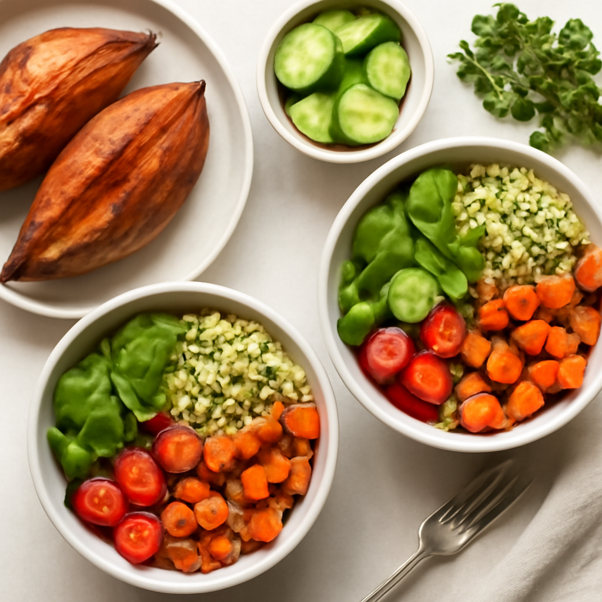

Sunday — Baked Sweet Potato & Quinoa Bowls

Cook Time: 30 minutes
Method: Oven
vegangluten-freequick
Ingredients for 6
- 6 medium sweet potatoes
- 3 cups cooked quinoa
- 1 cup black beans, canned, rinsed
- 1 bell pepper, diced
- 1 avocado, sliced
- 1 lime, juiced
- Fresh cilantro, chopped
Instructions
- Preheat oven to 400°F (200°C).
- Pierce sweet potatoes with a fork and bake for 25-30 minutes until soft.
- Meanwhile, prepare quinoa as per instructions.
- In a bowl, combine black beans, diced bell pepper, lime juice, and cilantro.
- Once sweet potatoes are ready, cut in half, scoop some flesh if needed, and fill with quinoa mixture, topping with avocado slices.
Toddler Notes
- Ensure sweet potato is well-cooked and mashable.
- Avoid skin; cut into small, manageable pieces for toddlers.
← Back to weekly plan